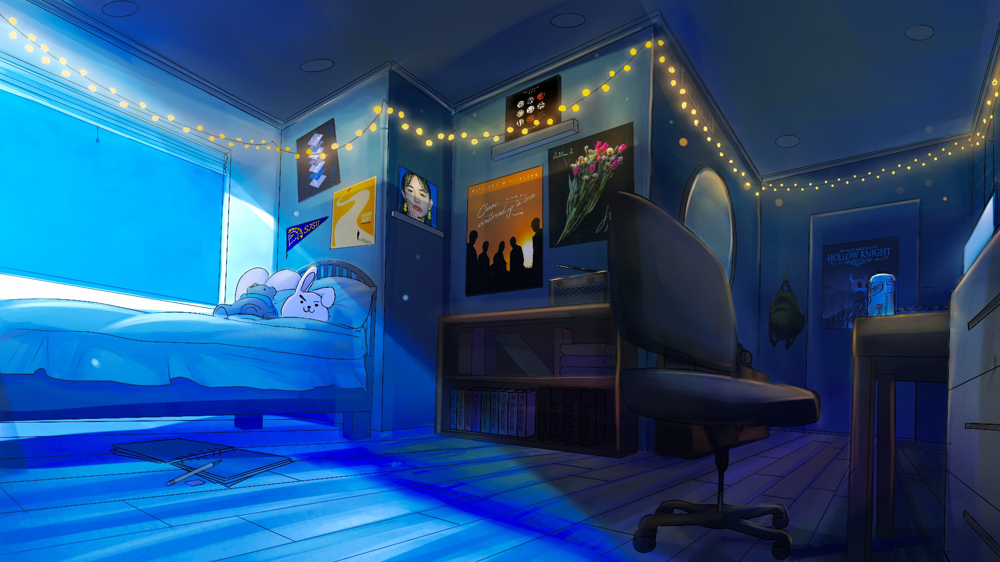
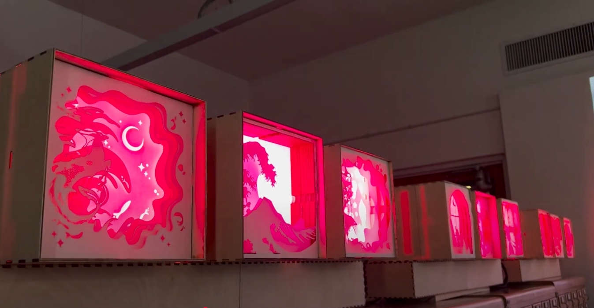
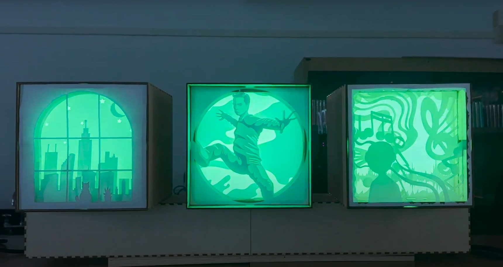
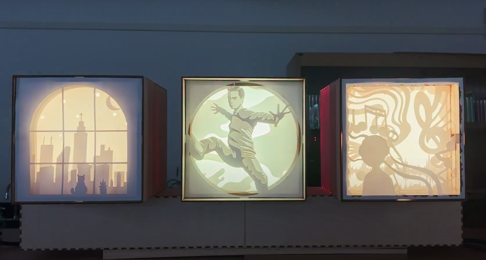

A collaborative piece created with my peer, Ashlyn Larrus, who is a 2D digital artist. 2D and 3D incorporation we did of a room comparing and contrasting how 3D differs from 2D.
For this project, we wanted to express feelings of calmness, relaxation, and chill vibes by fitting it all in a single room.
(1920x1080)
Serenity (2D Version) - Ashlyn Larrus

Serenity (3D Version) - Leo Yan
Artist Statement
For our collaboration project, my partner Ashlyn and I decided to work with two different mediums. Since we are both in the DMA major, we wanted to use our strengths for this project—her preferred medium being digital 2D drawing in ProCreate, while mine is 3D modeling and rendering in Blender. Our goal was to create a room that represents our ideal relaxing space, giving off feelings of calmness, peacefulness, and relaxation.
We incorporated sentimental objects, such as posters of our favorite albums, as music plays a big role in our lives, helping us destress. Another key detail is the sketchbook and pencil in the center of the room, symbolizing how we use art as an escape from daily pressures.
Throughout the process, we maintained communication and updated each other on our progress. Ashlyn began with sketches to determine the room layout, then I translated them into 3D using Blender. This collaboration was a great learning experience, as it was my first time working with another artist using a different medium. It pushed me out of my comfort zone and helped me improve both my technical and teamwork skills.
Lightbox Project (C.A.D.R.E. Club)- SJSU



Artist Statement
For our collaboration project, my partner Ashlyn and I decided to work with two different mediums. Since we are both in the DMA major, we wanted to use our strengths for this project—her preferred medium being digital 2D drawing in ProCreate, while mine is 3D modeling and rendering in Blender. Our goal was to create a room that represents our ideal relaxing space, giving off feelings of calmness, peacefulness, and relaxation.
We incorporated sentimental objects, such as posters of our favorite albums, as music plays a big role in our lives, helping us destress. Another key detail is the sketchbook and pencil in the center of the room, symbolizing how we use art as an escape from daily pressures.
Throughout the process, we maintained communication and updated each other on our progress. Ashlyn began with sketches to determine the room layout, then I translated them into 3D using Blender. This collaboration was a great learning experience, as it was my first time working with another artist using a different medium. It pushed me out of my comfort zone and helped me improve both my technical and teamwork skills.